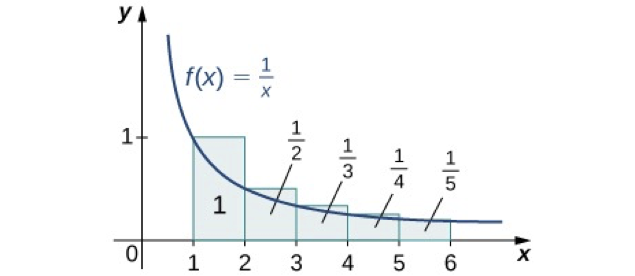

Geometric series are particularly nice, but there are other series as well. Let’s look at the constant series \(\sum\limits_{n = 0}^{\infty} \frac{1}{2}\). It should be clear that it diverges: the partial sums are \(\frac{1}{2}, 1, \frac{3}{2}, 2, \frac{5}{2}, ...\) which continue to get bigger and bigger. Similarly, the series \(\sum\limits_{n = 0}^{\infty} \frac{1}{1000000}\) also diverges, even if it grows pretty slowly. Moreover there is a nice theorem that generalizes both of these:
Theorem: If \(\lim\limits_{n \rightarrow \infty} a_n \neq 0\), then \(\sum\limits_{n=0}^{\infty} a_n\) diverges.
That is: if the limit of a sequence either does not exist, or exists but is not 0, then the sum of that sequence diverges. This is known as the Divergence Test .
For example, the series \(0 + \frac{1}{2} + \frac{2}{3} + \frac{3}{4} + \frac{4}{5} + \ldots\) diverges, since the sequence can be written as \(a_n = \frac{n}{n+1}\). This sequence approaches \(1\), and so the series diverges.
The Divergence Theorem tells you directly which series diverge. But does it tell you anything about which series must converge? Not necessarily. For example, the “Harmonic Series” diverges! It goes off to infinity quite slowly, but it does, in fact, go off to infinity. We will explore its divergence later.
One way to tell is by graphing the function \(f(x) = \frac{1}{x}\) and drawing in the “Riemann sum” approximations.

Figure 5.12 from your textbook: the sum of \(1+1/2+1/4+...+1/n+...\) is lager than the integral from 1 to infinity of \(1/x\). Notice that the rectangles are all above the graph, and, therefore, we can see: \[\sum_{n = 1}^{\infty} \frac{1}{n} \geq \int_1^{\infty} \frac{1}{x} dx\] Further, we know how to compute this integral: since the antiderivative of \(\frac{1}{x}\) is \(\ln(x)\), this integral can be computed as the limit as \(b \rightarrow \infty\) of \(\ln(b) - \ln(1)\), which is \(\infty\). Therefore, the series must also diverge.
Now let’s look at the series \(\sum\limits_{n = 1}^{\infty} \frac{1}{n^2}\). We can similarly compare it to the integral of \(f(x) = \frac{1}{x^2}\). In fact, there are two ways we can compare it:
and
Notice that this means that if \[\int_1^\infty \frac{1}{x^2} dx\] converges, then so does \[\sum_{n=1}^{\infty} \frac{1}{n^2}\] and if the integral diverges, then so does the series. And, again, we know how to compute the integral: \[\begin{aligned} &\lim_{b \rightarrow \infty} \int_1^b \frac{1}{x^2} dx \\ &= \lim_{b \rightarrow \infty} (-\frac{1}{b} + 1) \\ &= 1 \end{aligned}\]
Since the integral converges, the series also converges. This is known as the Integral Test:
suppose \((a_n)\) is a sequence of positive terms, and \(f(x)\) is a function with the following properties:
\(f(x)\) is decreasing
\(f(x)\) is continues
there is some \(N\) such that for all \(n\geq N\), \(a_n = f(n)\)
Them either \(\int_N^{\infty} f(x) dx \textrm{ and } \sum_{n = 1}^{\infty} a_n\) both converge or they both diverge. Note that this does not necessarily mean that they both converge to the same value: we can see that the integral of \(\frac{1}{x^2}\) from \(1\) to \(\infty\) converged to \(1\). But the series actually converges to \(\frac{\pi^2}{6}\): this is known as the Basel problem
Therefore, I indeed know nothing except that I know that I know nothing.
— Nicole Oresme
Nicole Oresme (1323–1382) was a brilliant philosopher, psychologist, economist, mathematician, physicist, astronomer, and musicologist, a passionate theologian, a competent translator, counselor of King Charles V of France, Bishop of Lisieux, one of the principal founders of modern sciences, probably the most original thinker of the 14th century and — so to speak — the "French Einstein of the 14th century."
There is a long tradition that says that Nicole Oresme was also the tutor to the dauphin (who later became Charles V), but this is not quite certain. Charles appeared to have had the highest esteem for Oresme’s character and talents, often followed his counsel, and made him write many works in French for the purpose of popularizing the sciences and of developing a taste for learning in the kingdom.
In his works, Oresme mentioned concepts translated as longitude and latitude. This was a seed from which the idea of an orthogonal coordinate system grew. He showed that his method of determining the latitude of forms could be applied to the movement of a point, provided that time is taken as longitude and speed as latitude; quantity is then the space covered in a given time.
Nicole was also fascinated by the Greeks’ discovery that the infinite series of the reciprocals of powers of 2 converges to 2.
Consider: \[1 + \frac{1}{2} + \frac{1}{4} + \frac{1}{8} + \cdots + \frac{1}{2^n} + \cdots\]
The partial sums are: \[1 + \frac{1}{2} = \frac{3}{2} = 2 - \frac{1}{2},\] \[1 + \frac{1}{2} + \frac{1}{4} = \frac{7}{4} = 2 - \frac{1}{4},\] \[1 + \frac{1}{2} + \frac{1}{4} + \frac{1}{8} = \frac{15}{8} = 2 - \frac{1}{8},\] \[1 + \frac{1}{2} + \frac{1}{4} + \frac{1}{8} + \frac{1}{16} = \frac{31}{16} = 2 - \frac{1}{16},\] \[\vdots\]
We observe the pattern: \[1 + \frac{1}{2} + \frac{1}{4} + \frac{1}{8} + \cdots + \frac{1}{2^n} = 2 - \frac{1}{2^n}.\]
As \(n \to \infty\), \(2^n \to \infty\), so \(\frac{1}{2^n} \to 0\), and thus the sum approaches 2.
Oresme also considered the sum of the reciprocals of all integers: \[1 + \frac{1}{2} + \frac{1}{3} + \frac{1}{4} + \frac{1}{5} + \cdots + \frac{1}{n} + \cdots\]
Unlike the powers of 2, this sum increases without bound and diverges to infinity. To see this, group the terms as follows:
\[\frac{1}{2},\] \[\frac{1}{3} + \frac{1}{4},\] \[\frac{1}{5} + \frac{1}{6} + \frac{1}{7} + \frac{1}{8},\] \[\frac{1}{9} + \cdots + \frac{1}{16},\] \[\frac{1}{17} + \cdots + \frac{1}{32},\] \[\vdots\]
Each group has \(1, 2, 4, 8, 16, 32, \dots\) terms, respectively. Each term in the \(k\)-th group is greater than or equal to \(\frac{1}{2^{k}}\), so each group’s sum is larger than \(\frac{1}{2}\). Thus, by continuing indefinitely, we can collect infinitely many halves, and therefore the harmonic series diverges.
Nicole Oresme’s proof of the divergence of the harmonic series fell into obscurity and was rediscovered in the 17th century by Pietro Mengoli, Johann Bernoulli, and Jacob Bernoulli.
The name "harmonic" comes from music: the wavelengths of the overtones of a vibrating string are \(\frac{1}{2}\), \(\frac{1}{3}\), \(\frac{1}{4}\), etc., of the string’s fundamental wavelength.
Harmonic sequences were popular among Baroque architects, who used them to establish proportions of floor plans, elevations, and harmonic relationships between architectural details.
Infinite series became extremely important in the 17th and 18th centuries, allowing mathematicians to compute values of logarithms, roots, and trigonometric functions with high precision.
The seventeenth-century German mathematician and philosopher Leibniz (1646–1716) discovered the following series for \(\pi\):
\[\pi = 4\left(1 - \frac{1}{3} + \frac{1}{5} - \frac{1}{7} + \frac{1}{9} - \frac{1}{11} + \cdots\right)\]
It is remarkable that the ratio of a circle’s circumference to its diameter is four times the alternating sum of the reciprocals of all odd numbers.
In the TV series Star Trek, Spock defeats an evil computer by asking it to compute the last digit of \(\pi\). Since \(\pi\) is irrational, it has no "last" digit.